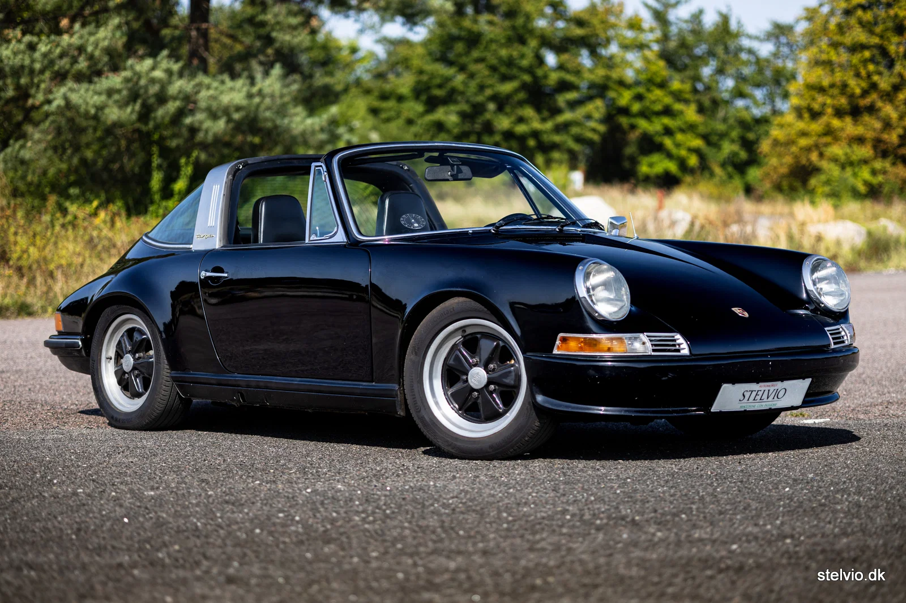
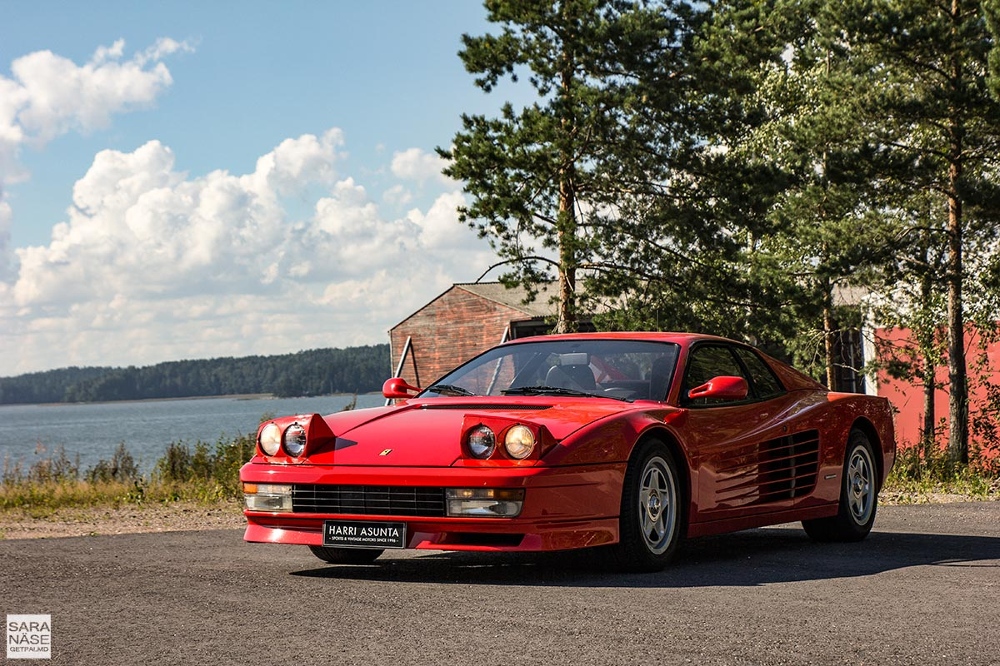
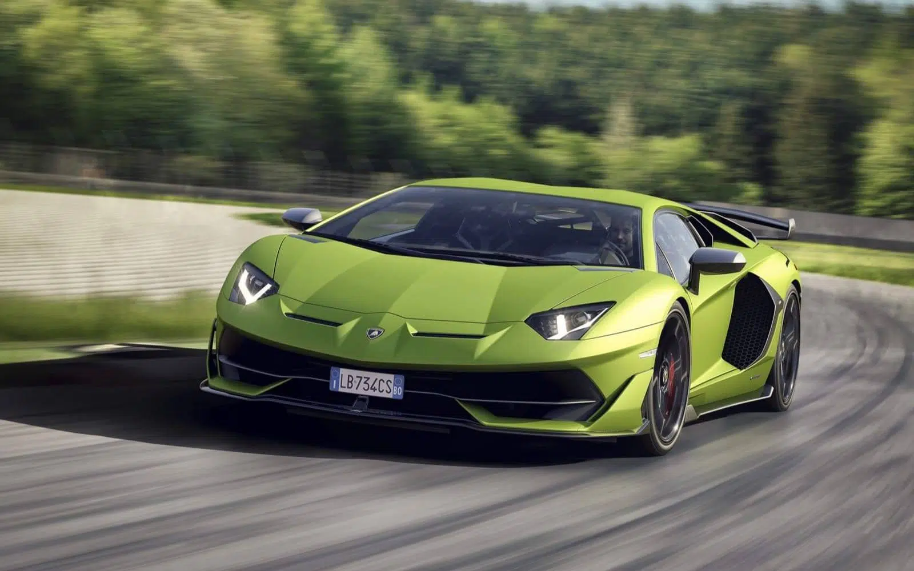
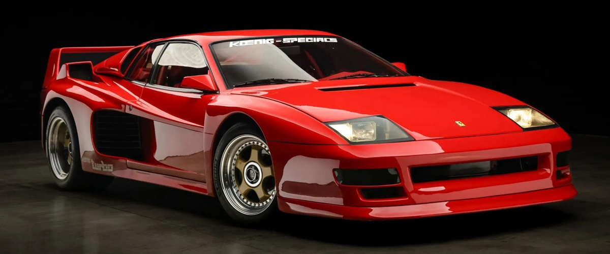
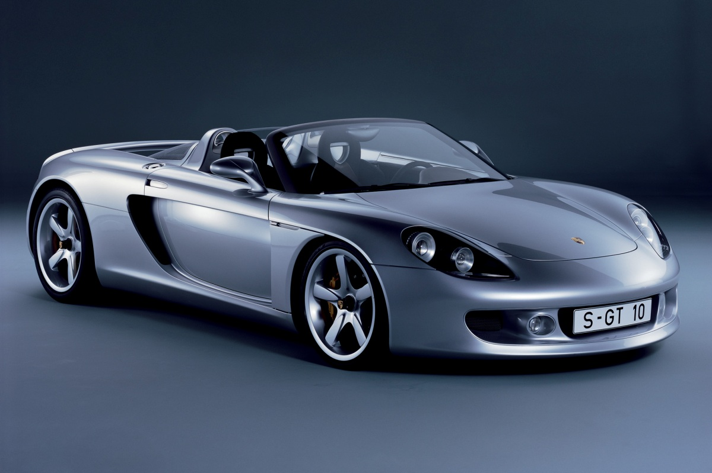
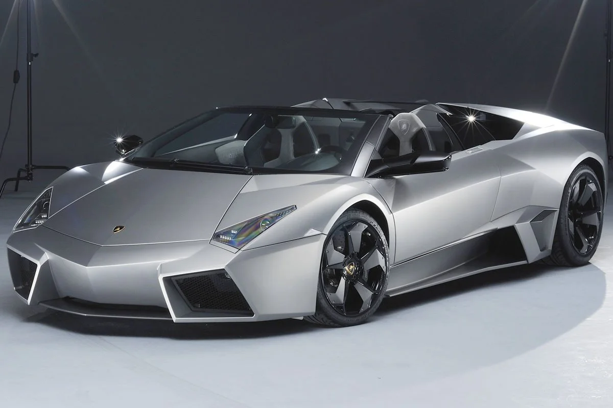

Desde los clásicos hasta la innovación moderna
El nacimiento del muscle car moderno

Icono eterno del diseño alemán

La esencia pura de Ferrari

El toro que redefine la velocidad
El nacimiento del muscle car americano, con modelos icónicos como el Mustang redefiniendo la potencia y el diseño.
Europa lidera el diseño con modelos como el Porsche 911, combinando elegancia, rendimiento y precisión.

Los superdeportivos alcanzan otro nivel con iconos como el Ferrari F40, pura velocidad y agresividad.
La tecnología comienza a dominar, con mejoras en seguridad, aerodinámica y electrónica.

Los coches se vuelven más inteligentes, con electrónica avanzada y diseño futurista.

La era moderna: híbridos, eléctricos y superdeportivos extremos como el Aventador.